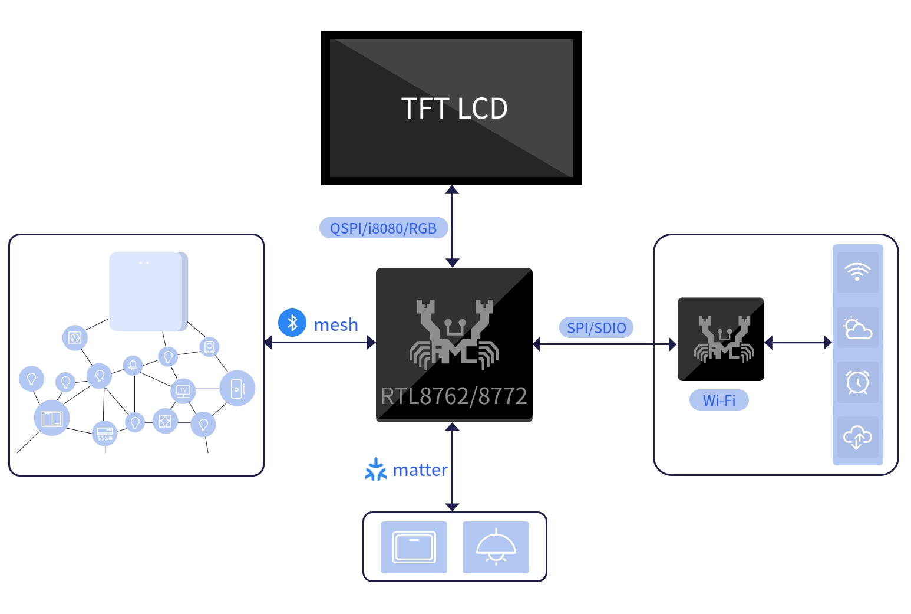
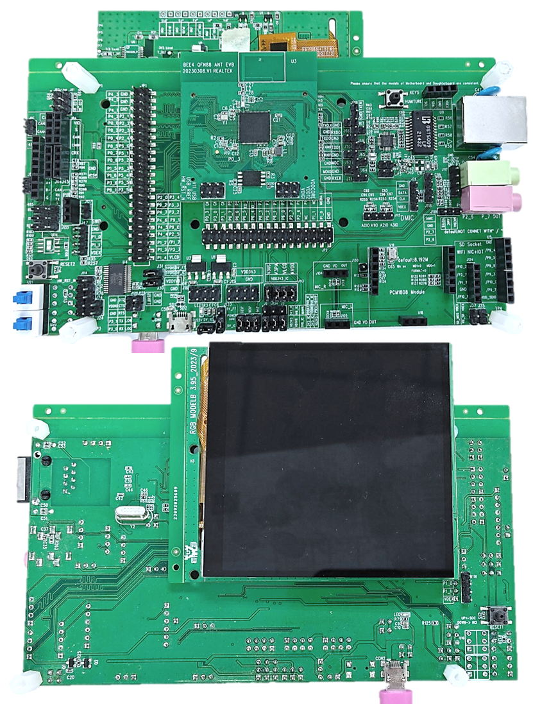
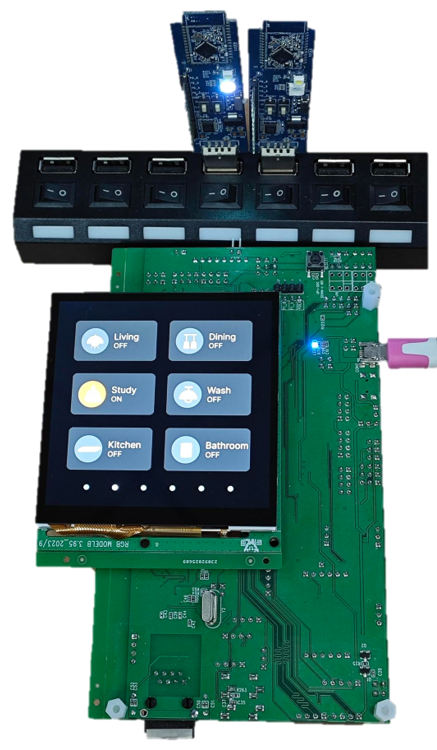
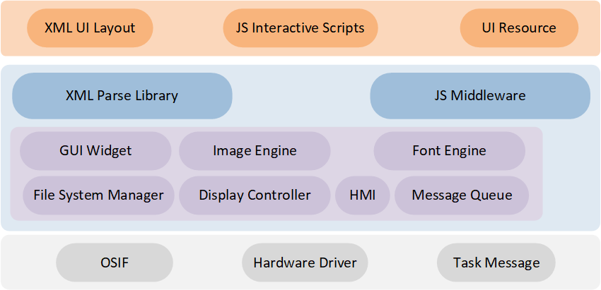

86Box
The 86Box controller in the smart home system is an important component that provides centralized management and control of various smart home appliances. It is designed similar to a regular switch socket and can be conveniently installed on the wall or embedded into it. Users can remotely control various devices such as air conditioners, TVs, lights, curtains, and door locks through dedicated applications on their smartphones or tablets. The 86Box controller makes home automation management efficient and convenient, greatly enhancing the quality of family life.
Overview
This document introduces relevant information about the 86Box Smart Home solution based on Realtek RTL8772GWP. Its purpose is to assist users in setting up the development environment, including understanding the SDK, compiling and flashing firmware, and system testing methods. Developers can flash the test files from the SDK to ensure proper development environment configuration and that the EVB is functioning correctly.
Note
The example solution described in this article uses the Realtek RTL8772GWP EVB with an RGB (480 * 480) LCD display driven by st7701s and a touch screen module driven by gt911. If developers choose the same hardware environment as described in this article, they can directly run the sample project in the SDK.
If you need to adapt to other models of displays and input devices, please refer to Porting for instructions on adapting to new display and input device drivers.
The Realtek RTL8772GWP chip supports display interfaces such as i8080, qspi/spi, and RGB888/RGB565.
Practical Application Case
The following diagram illustrates the modules included in the 86Box application:
{kind=link}

86Box Application Modules
Supported Features
The Realtek 86Box application provides comprehensive functionality support:
Support Bluetooth Mesh 1.1/1.0 protocol
Support Matter protocol
Support Wi-Fi network connection
Support visual UI development
Requirements
RTL87x2GWP EVB
LCD display module
Wi-Fi module
Mesh dongle module
Matter device
ARM Keil MDK: ArmMDK
MPTool_kits: RealMCU-Tool
DebugAnalyzer: RealMCU-Tool
RVisualDesigner: RealMCU-Tool
scons 4.4.0: run command in python environment pip install scons==4.4.0
GCC: Matter arm-gcc
Wiring
EVB
The EVB provides a hardware environment for user development and application debugging. The 86Box application uses the Model B EVB for demonstration, which consists of a mainboard and a daughterboard. The EVB has a download mode and a working mode. The download mode is used for functions like firmware burning, while the working mode is for normal operation of the application. Developer need to configure the EVB to enter the desired mode. For detailed information and instructions on using the EVB mainboard, please refer to Evaluation Board User Manual.
{kind=link}

86Box EVB Wiring
Wi-Fi Module
Please refer to section Wiring of document Wi-Fi for instructions on how to install the Wi-Fi module on the EVB.
Configurations
The configuration of the 86Box solution in the SDK is located in SDK\applications\86box\proj\menu_config.h, the default configuration of the find my feature in the SDK is as follows:
#define CONFIG_REALTEK_BUILD_GUI_OS_HEAP /* RTK GUI Use OS Heap */
// #define CONFIG_REALTEK_BUILD_MATTER_SWITCH /* Enable Matter Switch */
#define CONFIG_REALTEK_BUILD_MESH_SWITCH 0 /* Enable Mesh Provisioner, 0: disable, 1: enable */
#define CONFIG_REALTEK_BUILD_WIFI_NIC 0 /* Enable WIFI NIC, 0: disable, 1: enable */
Note
After making configuration changes, the configuration will take effect when the project is rebuilt according to the supported compilation method. Please refer to the Building and Downloading steps for the building method.
CONFIG_REALTEK_BUILD_GUI_OS_HEAP: Configures whether to use internal RAM as the main RAM resource. It can be configured to use PSRAM as the main RAM resource.CONFIG_REALTEK_BUILD_MATTER_SWITCH: Configures whether to enable the Matter module. The Matter module only supports GCC compilation.CONFIG_REALTEK_BUILD_MESH_SWITCH: Configures whether to enable the Mesh module. The Mesh module only supports arm-compiler compilation.CONFIG_REALTEK_BUILD_WIFI_NIC: Configures whether to enable the Wi-Fi Nic module. The Wi-Fi Nic module only supports arm-compiler compilation.
Building and Downloading
Refer to Quick Start to build and download. It is worth noting that:
- In Generating Flash Map sevtion:the developer need to generate the
flash_map.iniaccording to theSDK\applications\86box\proj\flash_map.h. - In Generating System Config File section:make sure to enable psram power. Other features can be configured as needed.

System Config Enable Psram Power
In Generating App Image section:
The 86Box SDK project path is
SDK\applications\86box\proj.The Keil MDK project path is
SDK\applications\86box\proj\mdk.After modifying the project configuration, the project needs to be rebuilt, which will generate a completely new project file to overwrite the original project file.
To build the project, open a cmd window in the project path.
For projects that support arm-compiler, run the command scons --target=mdk5 to build the mdk project. Open the mdk project for compilation. The APP image will be generated in
SDK\applications\86box\proj\mdk\bin.SDK\applications\86box\proj> scons --target=mdk5 scons: Reading SConscript files ... ... CC xxxx.o CC xxxx.o ... LINK app.elf fromelf --bin app.elf --output rtthread.bin fromelf -z app.elf scons: done building targets.
For projects that support gcc, run scons to build and compile the project. The APP image will be generated in the project path.
SDK\applications\86box\proj> scons scons: Reading SConscript files ... ... CC xxxx.o CC xxxx.o ... arm-none-eabi-size app.elf text data bss dec hex filename 974942 0 221424 1196366 12414e app.elf ..\..\..\tools\md5\md5.exe app_MP.bin MD5 v1.0.4 Output Image: app_MP_sdk_1.0.5.16_5870d5e6-ecdd77cad50adfc46b584686317c7199.bin scons: done building targets.
Generating and downloading User Data:
Please use the User Data feature of the MPTool to download
root(0x4600000).binand write it to the address0x04600000.The demo User Data path is
SDK\subsys\gui\gui_engine\example\screen_480_480\.When exporting a custom UI using RVisualDesigner, the path is
RVisualDesigner prj\Export\bin.
Experimental Verification
GUI Testing
After successfully flashing the firmware and UserData, switch the EVB to working mode and perform a reset to restart.
After the device restarts, you will see a 86Box icon. Click on the icon to enter the application. The application has multiple horizontal tabs that can be sequentially switched by swiping left or right. The bottom dots indicate the current tab position, and you can click on them to quickly jump to a specific tab. The tabs include the main page, switch page, air conditioning page, curtain page, and WiFi speed test page. The controls within each page, such as buttons, can be interacted with. For more demonstrations of interactive controls, please refer to the Demo An 86box Application.

86Box UI Demo
Mesh Testing
Configure the Mesh module in the project, build and compile it, and then flash and download it.
Power on the Mesh Dongle and ensure that the switch on the dongle is in the ON position. When the switch is turned to the ON position, the dongle will blink one-time.
After restarting the EVB, click on the 'bird' icon to enter the 86Box application. Swipe to the switch page and click on the corresponding switch to observe the Mesh Dongle lighting up or turning off, consistent with the status of the lights on the screen.
For more detail information, please refer to Mesh Provisioner.
{kind=link}

86Box Mesh Demo
Matter Testing
Please refer to section Building in the Light Switch document for the building part of Matter light switch. The generated Matter libs will be included in 86Box app.
Configure the Matter module in the project, build and compile it, and then flash and download it.
Please refer to section Experimental Verification in the Light Switch document for the testing procedures of device commissioning, device binding and light control. Replace the 'Light Switch' app with '86Box' app.
Wi-Fi Testing
Configure the Mesh module in the project, build and compile it, and then flash and download it.
Please refer to section Experimental Verification in the Wi-Fi document for the testing procedures of Wi-Fi scanning, connection, and other functionalities.
Software Design Introduction
This chapter provides an overview of the software-related technical specifications and behavior specifications for the RTL8772GWP 86Box solution. It covers all the functionalities of 86Box, including GUI tasks, Mesh communication tasks, Matter communication tasks, Wi-Fi communication tasks, etc. These specifications are intended to guide the development of 86Box and troubleshoot software testing issues.
Source Code Directory
Project directory:
sdk\application\86box\proj.Source code directory:
sdk\application\86box\src.
Source files in 86Box application project are currently categorized into several groups as below.
└── Project: 86box
└── app includes the 86Box user application implementation
├── menu_config.h project construct configurations
├── main.c
└── 86box_init.c
├── lib
├── device
├── peripheral includes all peripheral drivers and module code used by the application
├── profile includes BLE profiles or services
├── dfu
├── dfu_task
├── rtk_gui includes all gui porting
├── gui_port_acc.c
├── gui_port_dc.c display controller port
├── gui_port_filesystem.c filesystem api port
├── gui_port_ftl.c
├── gui_port_indev.c
└── gui_port_os.c os api port
├── realgui/3rd
├── JerryScript
├── JerryScriptPort
├── realgui/app
├── realgui/dc
├── realgui/engine
├── realgui/input
├── realgui/misc
├── realgui/SaaA includes js middle layer function implementation
├── realgui/server
├── realgui/widget includes all the realgui widgets implementation
├── database
├── fs
├── hal_drivers
├── lcd_low_driver includes display pannel IC driver implementation
├── Compiler
└── touch_driver includes touch IC driver implementation
:
└── matter_switch includes Matter switch function implementation
:
├── mesh switch includes mesh driver support
└── mesh app includes mesh application implementation
:
└── wifi_nic includes Wi-Fi function implementation
Flash Layout
Application default flash layout header file: sdk\application\86box\proj\flash_map.h.
Example layout with a total flash size of 16 MB |
Size(byte) |
Start Address |
|---|---|---|
Reserved |
4K |
0x04000000 |
OEM Header |
4K |
0x04001000 |
Bank0 Boot Patch |
32K |
0x04002000 |
Bank1 Boot Patch |
32K |
0x0400A000 |
OTA Bank0 |
2456K |
0x04012000 |
|
4K |
0x04012000 |
|
32K |
0x04013000 |
|
60K |
0x0401B000 |
|
212K |
0x0402A000 |
|
2148K |
0x0405F000 |
|
0K |
0x04278000 |
|
0K |
0x04278000 |
|
0K |
0x04278000 |
|
0K |
0x04278000 |
|
0K |
0x04278000 |
|
0K |
0x04278000 |
|
0K |
0x04278000 |
OTA Bank1 |
0K |
0x04278000 |
Bank0 Secure APP code |
16K |
0x04278000 |
Bank0 Secure APP Data |
0K |
0x040AC000 |
Bank1 Secure APP code |
0K |
0x0427C000 |
Bank1 Secure APP Data |
0K |
0x0427C000 |
OTA Temp |
2148K |
0x0427C000 |
FTL |
16K |
0x04495000 |
APP Defined Section1 |
0K |
0x04499000 |
APP Defined Section2 |
0K |
0x04499000 |
Important
To adjust flash layout, flow the steps listed on the Generating Flash Map in Quick Start
After flash layout adjustment, you must flow the steps listed on the Generating OTA Header and Generating System Config File with new flash layout file.
Software Architecture
The software architecture of the system is shown below:

Software Architecture
Platform feature: Includes OTA, Flash, FTL and etc.
Peripheral driver: Provide application layer access to the interface of RTL87x2G peripherals.
OSIF: Abstraction layer for real-time operating systems.
GAP: Abstraction layer which user application communicates with BLE stack.
Application: The application layer contains user-defined application tasks.
Task and Priority
As shown below, eight tasks have been created:

System Software Architecture
The description of each task and its priority is shown in table:
Task |
Description |
Priority |
|---|---|---|
Timer |
Implement the software timer required by FreeRTOS |
6 |
Lower stack |
Implement BT stack protocols below HCI |
6 |
Upper stack |
Implement BT stack protocols above HCI |
5 |
Wi-Fi |
init Wi-Fi |
2 |
Mesh |
init Mesh |
1 |
Matter |
init Matte |
1 |
GUI |
Handling UI display and interaction |
1 |
Idle |
Run background tasks |
0 |
Note
Multiple application tasks can be created, and memory resources will be allocated accordingly.
GUI Task
The software architecture of the GUI task is shown in the following diagram:
{kind=link}

GUI Task Software Architecture
The GUI of the 86Box application is developed using a scripting language in collaboration with the visual UI design tool, RVisualDesigner. Developers use the UI design tool for UI layout design and resource configuration, and then utilize JS scripting language for interactive logic design. This development approach and software architecture are flexible and convenient. It uses JS middleware and XML parsing libraries to encapsulate common controls and interaction methods, reducing the learning curve for developers and shortening the development cycle. For details on how to use JS scripts and RVisualDesigner for UI design and development, please refer to Use Script Design An Application.
In the GUI task, the GUI utilizes the HMI (Human Machine Interface) with hardware device drivers to instantly capture and process user interactions, including touchpad and displays. The GUI then transfers the information to the corresponding controls. Developers can listen for user actions and control events in the JS script using APIs to further handle callbacks. Additionally, the GUI uses message queues to achieve information synchronization with other tasks, such as Mesh messages, Matter messages, Wi-Fi messages, etc. When developers need to port or adapt to other hardware platforms, they only need to modify the relevant interface files. For more information, please refer to Porting.
Mesh Task
The software architecture for the Mesh task can be found in Mesh Overview document.
Matter Task
The Matter task is mainly used for initializing Matter stack. The Matter stack is developed on the official Matter GitHub repository and is open-sourced.
Wi-Fi Task
The software architecture for the Wi-Fi task can be found in section Software Architecture of the Wi-Fi document.